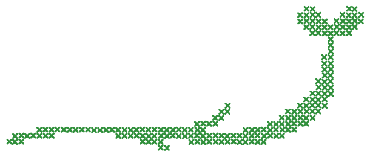

IDENTITY 05Messaging
ONE LINE, FOUR PILLARS, ONE VOICE
THE LINE
From Scraps.
To Pastures.
To Pastures.

Tara Firma turns leftovers into life,
then opens the gate so you can see it.
then opens the gate so you can see it.
How we sound
Say the real thing.
Names, numbers, places.
238 acres, not lots of land.
238 acres, not lots of land.
Be a little funny.
It’s a farm with a barn dance.
It's a little dumb.
It's a little dumb.
Keep it short.
Short sentences.
No farm clichés, no eco jargon.
No farm clichés, no eco jargon.
PILLAR
The loop
Leftovers make the best topsoil.
From grocery scraps to green pasture.
A closed loop,
238 acres wide.
238 acres wide.
PILLAR
The land
238 acres, run in rotation.
The cows mow. The hens clean up.
Grazed paddock by paddock.
PILLAR
The gatherings
Come for the barn dance. Stay for the hay.
Pumpkins on Pikes, every October.
Dinner on the hill,
dance under the stars.
dance under the stars.
PILLAR
The store
Eggs laid this week.
Open weekdays, right off I Street.
Laid here.
Sold here.
Sold here.
Words we use, and what they replace
leftoverswaste or garbge
the herdour livestock
composteco-friendly solutions
come outexperience the farm